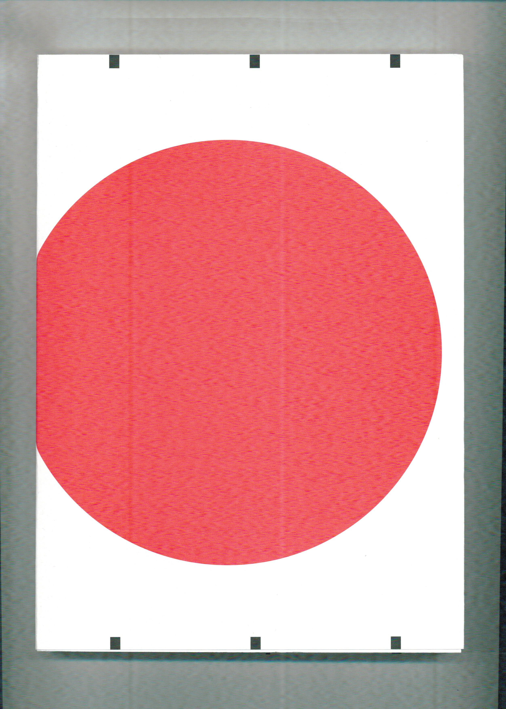

made
2001
$25
BUY176 pages, 7 by 10 inches, 2dcloud, 2017
"This is Larmee's best book, in a career marked by many thoughtful projects. Here, we find Larmee continuing to create systems that invert themselves into each other. He compliments one stream of thinking only to undercut it, and then reverse course again. Larmee thinks about comics far more ambitiously than so many of his peers, using the form as commentary on imagery, perceptions of artistic stances, etc, only to then question the very idea of such commentary. Underneath it all is what draws people to Larmee's work in the first place, the sharp as a tack drawing and cartooning, which has never been more distilled than it is in this work." Austin English